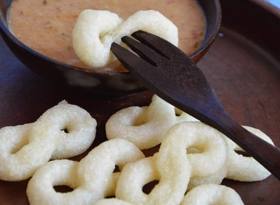

Geblek
Ini merupakan makanan ringan dari Kabupaten Kulonprogo, daerah sisi barat Yogyakarta. Geblek terbuat dari tepung tapioka yang dibumbui dengan bawang putih. Warnanya putih, teksturnya kenyal seperti cireng. Saat digoreng, bagian luarnya menjadi garing, namun dalamnya tetap empuk. Untuk menambah cita rasanya, geblek bisa dinikmati dengan siraman saus kacang. Cemilan ini cocok untuk dijadikan oleh-oleh khas dari Jogja, selain bakpia atau gudeg. Belilah geblek yang belum digoreng, kemudian anda bisa menggorengnya sendiri sesampainya di rumah. Geblek mentah bisa bertahan selama hampir seminggu, sementara geblek yang sudah digoreng hanya mampu bertahan kira-kira sehari saja.